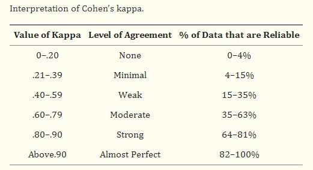

gre gpa admit gre gpa
Min. :0.0000 Min. :0.0000 0:273 Min. :220.0 Min. :2.260
1st Qu.:0.5172 1st Qu.:0.5000 1:127 1st Qu.:520.0 1st Qu.:3.130
Median :0.6207 Median :0.6523 Median :580.0 Median :3.395
Mean :0.6340 Mean :0.6494 Mean :587.7 Mean :3.390
3rd Qu.:0.7586 3rd Qu.:0.8103 3rd Qu.:660.0 3rd Qu.:3.670
Max. :1.0000 Max. :1.0000 Max. :800.0 Max. :4.000
rank rank_1 rank_2 rank_3 rank_4
1: 61 Min. :0.0000 Min. :0.0000 Min. :0.0000 Min. :0.0000
2:151 1st Qu.:0.0000 1st Qu.:0.0000 1st Qu.:0.0000 1st Qu.:0.0000
3:121 Median :0.0000 Median :0.0000 Median :0.0000 Median :0.0000
4: 67 Mean :0.1525 Mean :0.3775 Mean :0.3025 Mean :0.1675
3rd Qu.:0.0000 3rd Qu.:1.0000 3rd Qu.:1.0000 3rd Qu.:0.0000
Max. :1.0000 Max. :1.0000 Max. :1.0000 Max. :1.0000
k_11_mm <-knn(train = admision_mm, test = admision_mm,cl = admision[,1], k =11)caret::confusionMatrix(k_11_mm, admision[,1])
Confusion Matrix and Statistics
Reference
Prediction 0 1
0 266 67
1 7 60
Accuracy : 0.815
95% CI : (0.7734, 0.8519)
No Information Rate : 0.6825
P-Value [Acc > NIR] : 1.706e-09
Kappa : 0.5114
Mcnemar's Test P-Value : 6.953e-12
Sensitivity : 0.9744
Specificity : 0.4724
Pos Pred Value : 0.7988
Neg Pred Value : 0.8955
Prevalence : 0.6825
Detection Rate : 0.6650
Detection Prevalence : 0.8325
Balanced Accuracy : 0.7234
'Positive' Class : 0
gre gpa admit gre gpa
Min. :0.03981 Min. :0.04885 0:273 Min. :220.0 Min. :2.260
1st Qu.:0.35754 1st Qu.:0.33561 1:127 1st Qu.:520.0 1st Qu.:3.130
Median :0.48334 Median :0.50335 Median :580.0 Median :3.395
Mean :0.50137 Mean :0.50218 Mean :587.7 Mean :3.390
3rd Qu.:0.65156 3rd Qu.:0.67612 3rd Qu.:660.0 3rd Qu.:3.670
Max. :0.86269 Max. :0.83246 Max. :800.0 Max. :4.000
rank rank_1 rank_2 rank_3 rank_4
1: 61 Min. :0.0000 Min. :0.0000 Min. :0.0000 Min. :0.0000
2:151 1st Qu.:0.0000 1st Qu.:0.0000 1st Qu.:0.0000 1st Qu.:0.0000
3:121 Median :0.0000 Median :0.0000 Median :0.0000 Median :0.0000
4: 67 Mean :0.1525 Mean :0.3775 Mean :0.3025 Mean :0.1675
3rd Qu.:0.0000 3rd Qu.:1.0000 3rd Qu.:1.0000 3rd Qu.:0.0000
Max. :1.0000 Max. :1.0000 Max. :1.0000 Max. :1.0000
k_11_sm <-knn(train = admision_sm, test = admision_sm,cl = admision[,1], k =11)caret::confusionMatrix(k_11_sm,admision[,1])
Confusion Matrix and Statistics
Reference
Prediction 0 1
0 266 67
1 7 60
Accuracy : 0.815
95% CI : (0.7734, 0.8519)
No Information Rate : 0.6825
P-Value [Acc > NIR] : 1.706e-09
Kappa : 0.5114
Mcnemar's Test P-Value : 6.953e-12
Sensitivity : 0.9744
Specificity : 0.4724
Pos Pred Value : 0.7988
Neg Pred Value : 0.8955
Prevalence : 0.6825
Detection Rate : 0.6650
Detection Prevalence : 0.8325
Balanced Accuracy : 0.7234
'Positive' Class : 0
Clasificación: Medidas de Evaluación
Predicción
Los modelos de clasificación generan dos tipos de predicciones:
Continuas: Probabilidad de pertenencia a una clase.
Categóricas: Clase predicha.
KNN provee ambos tipos de predicciones; mientras que Regresión Logística solo provee la probabilidad de pertenencia a una clase.
Las probabilidades de pertenencia a una clase pueden servir incluso como input para modelos.
Evaluación de las clases predichas
Un método común para tal evaluación es la matriz de confusión.
Predichos
Eventos Observados
No Eventos Observados
Eventos
True Positive
False Positive
No Eventos
False Negative
True Negative
Métrica más simple:
Ratio de la exactitud total (accuracy) \(\quad acc(d) = \dfrac{TP + TN}{P + N}\)
Ratio de error: \(\quad 1 - acc(d)\)
Desventajas de este par de métricas:
No realiza distinciones entre el tipo de error cometido.
Por ejemplo, en filtros de spam, el costo de borrar un e-mail importante es mucho mayor que los costos de permitir un e-mail spam pase el filtro.
Es importante considerar la frecuencia total de cada clase. Cuando se tienen clases muy desbalanceadas, el accuracy no deberíaser la métrica principal para evaluar el modelo de clasificación.
Para regresión logística binaria, el accuracy se maximiza cuando el punto de corte \(c\) (para asignar clase en base a probabilidad estimada) vale 0.5.
Ratio no informativo: Ratio de exactitud que se podría alcanzar sin usar un modelo. Por ejemplo, \(50\%\) en caso de tirar una moneda justa.
Este último ratio se puede definir de varias formas:
Para un conjunto de datos con \(C\) clases, se puede considerar \(1/C\).
Puede usarse el porcentaje de la clase de mayor frecuencia, en el conjunto de entrenamiento.
Sobre el efecto severo de clases no balanceadas y posibles medidas remediales, ver Kuhn y Johnson (2013).
No necesariamente clases desbalanceadas implica dificultad de predicción. Por ejemplo, si la clase representa alguna condición extremadamente poco común (que una persona sea intersex, o algo así). En ese contexto, (clases poco comunes pero fáciles de predecir) no se consideran los datos como desbalanceados.
Coeficiente Kappa de Cohen
El coeficiente Kappa fue diseñado para evaluar la concordancia entre dos evaluadores/jueces.
Kappa toma en cuenta la precisión que sería generada por causas aleatorias: \(Kappa = \dfrac{O - E}{1 - E}\), donde \(O\) es la precisión observada, y, \(E\), la precisión esperada.
\(O\) es \(acc(.)\) del modelo usado.
Kappa está entre \(-1\) y \(1\).
\(Kappa \leq 0\) implica baja concordancia, pudiendo ser generada por haber definido erróneamente algunas categorías.
\(Kappa \approx 0\) implica no hay concordancia entre las clases observadas y las pronisticadas..
\(Kappa \approx 1\) implica perfecta concordancia entre las clases observadas y las pronisticadas.

Interpretation of Cohen’s Kappa
Ejemplo para una matriz de confusión que vimos en un modelo de hoy:
mc <-matrix(data =c(256, 84, 17, 43), nrow =2, byrow =TRUE) mc
[,1] [,2]
[1,] 256 84
[2,] 17 43
P <-sum(mc[1, ])N <-sum(mc[2, ])O <-sum(diag(mc)) / (P + N)O
[1] 0.7475
prop_P <- P / (P + N)prop_N <- N / (P + N)E <- (sum(mc[,1])*prop_P +sum(mc[,2])*prop_N) / (P + N)E
[1] 0.62775
kappa <- (O - E) / (1- E)kappa
[1] 0.3216924
Clasificación Binaria
La sensitivity/sensibilidad/recall de un modelo es el ratio en que el evento de interés es predicho correctamente, para todas las muestras que contienen el evento:
Es el ratio de verdaderos positivos.
\(sensibilidad(d) = \dfrac{TP}{TP + FN}\)
Especificidad:
Es el ratio de verdaderos negativos.
\(Especificidad(d) = \dfrac{TN}{FP + TN}\)
En el caso de predecir si un correo es SPAM, considerando como éxito\(Y = 1\), de tratarse de SPAM, es mejor una mayor especificidad, que sensibilidad.